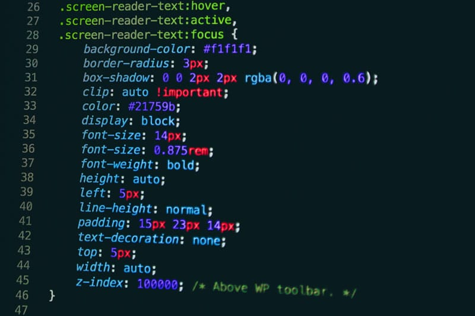
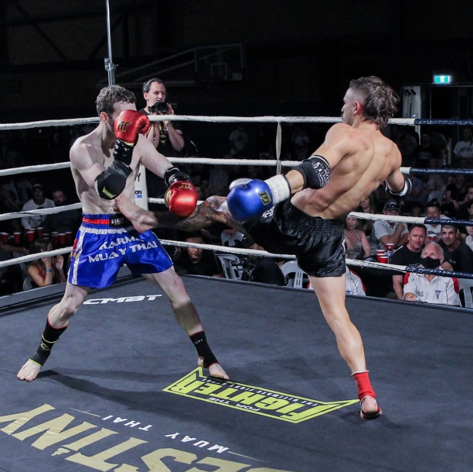
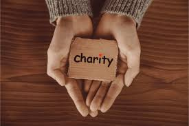

I build websites and design databases that are user-friendly, efficient, and tailored to your needs. I help individuals, freelancers, and businesses bring their ideas online and organise information effectively.

I specialize in creating modern, responsive websites and designing robust, scalable databases tailored to your needs. I help individuals, freelancers, and businesses turn ideas into fully functional digital solutions—whether that’s a portfolio, an e-commerce platform, or a data-driven tool. I bring practical experience from working with real clients and teams, including a Python-based remote internship at First Derivative and a two-week international placement at Prisco Business Group in Braga, Portugal. These opportunities strengthened my skills in problem-solving, client communication, and project delivery. I focus on clean, user-friendly interfaces, efficient backend systems, and practical database structures that make managing information easy. From setting up relational databases and writing custom queries to developing responsive websites with a smooth user experience, I aim to deliver solutions that save time, reduce complexity, and empower my clients to succeed online.
From professional life to personal passions, here’s a glimpse into what I enjoy outside of work and development.

I recently started kickboxing as a new hobby, but I’ve been passionate about boxing and combat sports for years. Since 2018, I’ve trained on and off—learning on my own, attending gyms, and following my love for boxing and UFC. Combat sports have taught me discipline, focus, and resilience, and I enjoy the challenge of continuously improving my skills.

Giving back and staying active are important parts of my life. I’ve participated in a variety of events that push me physically while helping others, including:
These experiences have strengthened my discipline, determination, and sense of community, and they continue to motivate me both personally and professionally.
Whether it’s a website, a database, or just an idea you want to explore, I’m here to help bring it to life.
Work With Me